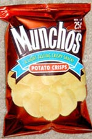

What's your favorite? I love the Hot Cheetos(what are they called?) and Lays Salt and Vinegar.
Cheeto Puffs Dipped in BBQ sauce
I don't care if you say yuck, it tastes good.
I don't care if you say yuck, it tastes good.

It's like an orgasmic mix of nacho and chip.
I like just about anything, but mainly Chicken, Salt And Vinegar, and Original.
Screw chips! Onion rings is the antidote for all your taste-bud needs!
Onion Rings, Hot Cheetos, Ruffles, and anything with a sour cream flavor.
It's /crisps/! And Pringles, of course.
???????
Barbecue Lays...
^ Blech!
Any of several healthier no-name brands click with me, though Cheetos Puffs used to be an all-time fav.
Any of several healthier no-name brands click with me, though Cheetos Puffs used to be an all-time fav.
???????
He means chips/crisps.
The vending machine at my mom's office has these T.G.I. Fridays bacon and cheddar flavored potato chips. They're awsome. I'm also a big fan of Cheetos, and I'm generalizing. Usually, when it comes to Cheetos, I go through different periods of time where I'll only eat a certain kind of Cheeto. Oh, and there's also a less known but relatively well-known brand of potato chips called Cape Cod. They're the best potato chips.
I'll eat pretty much any flavor chip. I'm a connoiseur.